Settimana 34
| 1 min read
Settimana di buoni allenamenti ma purtroppo con un inizio di dolore al ginocchio. 😐
Prima uscita
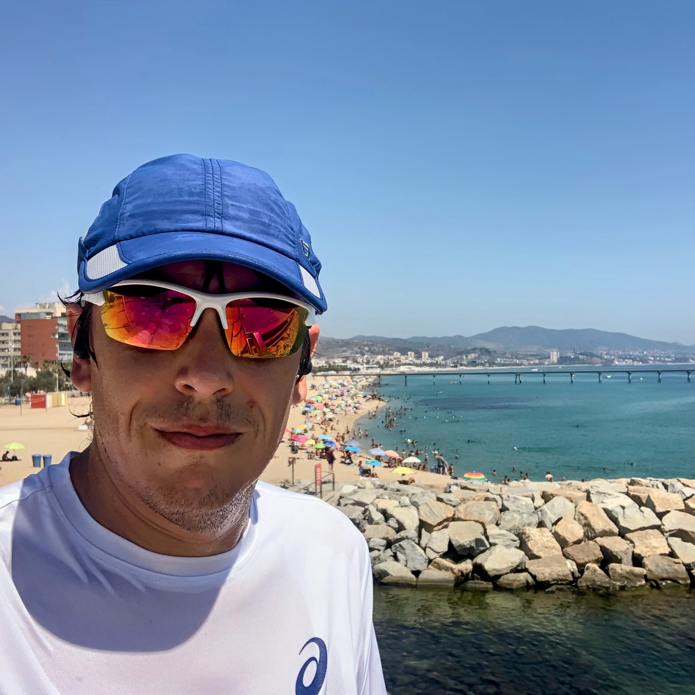
Corsa lenta con un caldo terribile.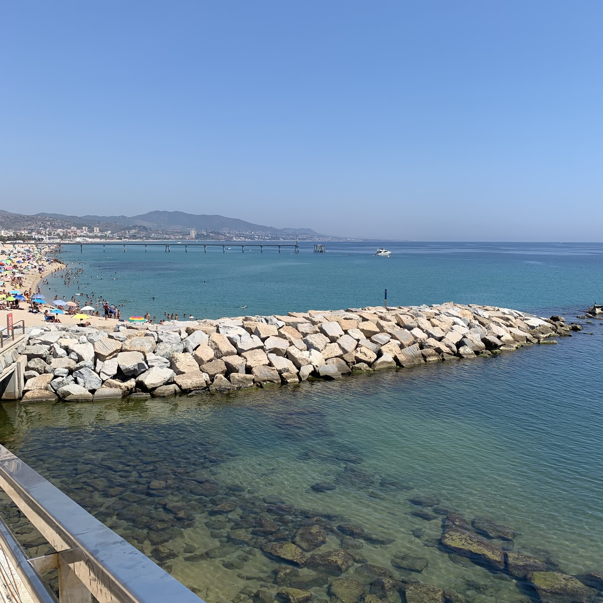
Ad un certo punto mi son dovuto fermare a strizzare la maglietta perché era troppo bagnata e pesante.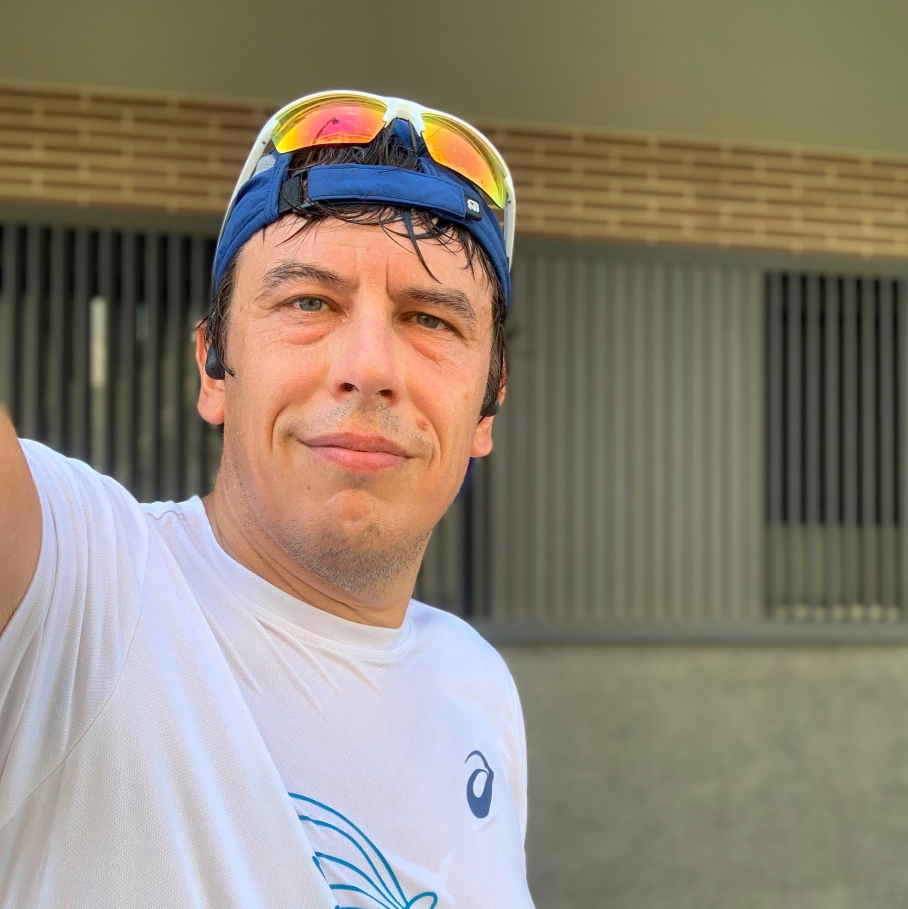
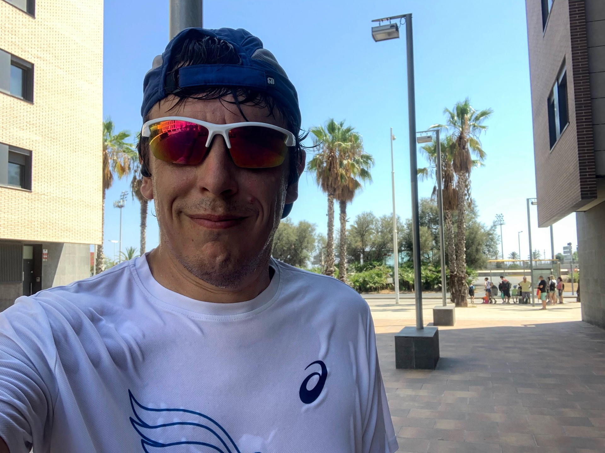
Una Z2 un po' troppo alta come al solito quando fa caldo.
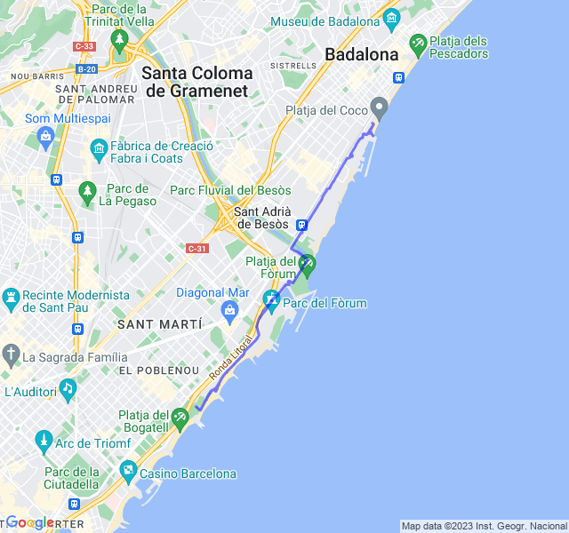
Seconda uscita
Ripetute lunghe (2000) in Z4. Molto faticose ma, nonostante non credevo di potercela fare, son riuscito a tenere un buon ritmo.
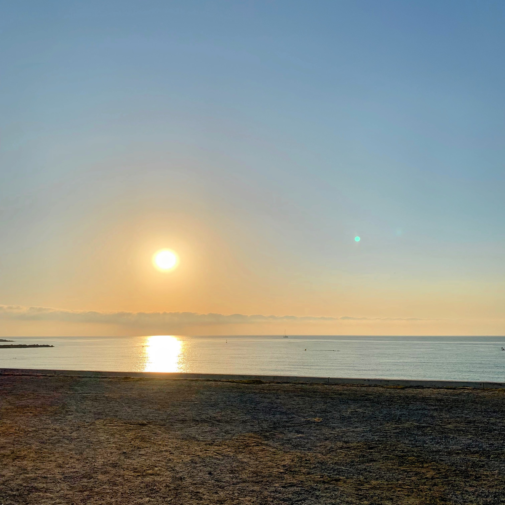
Un po' troppo lenti gli ultimi recuperi e troppo veloce il primo, la prossima volta devo stare più attento.
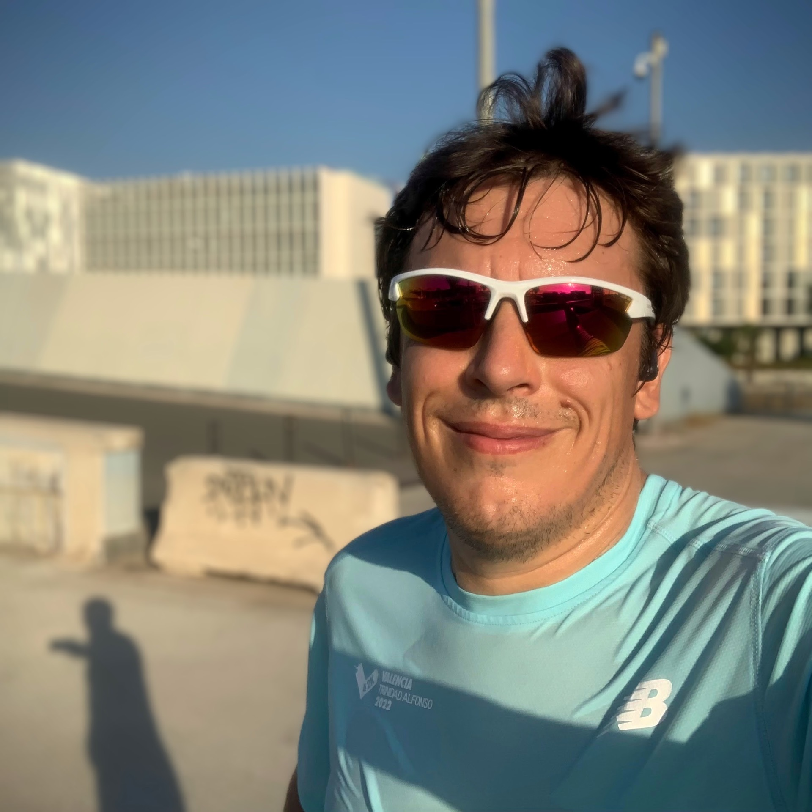
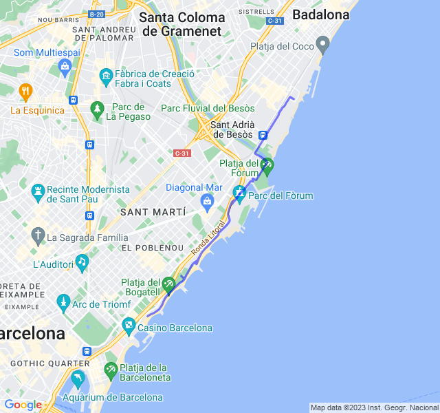
Terza uscita
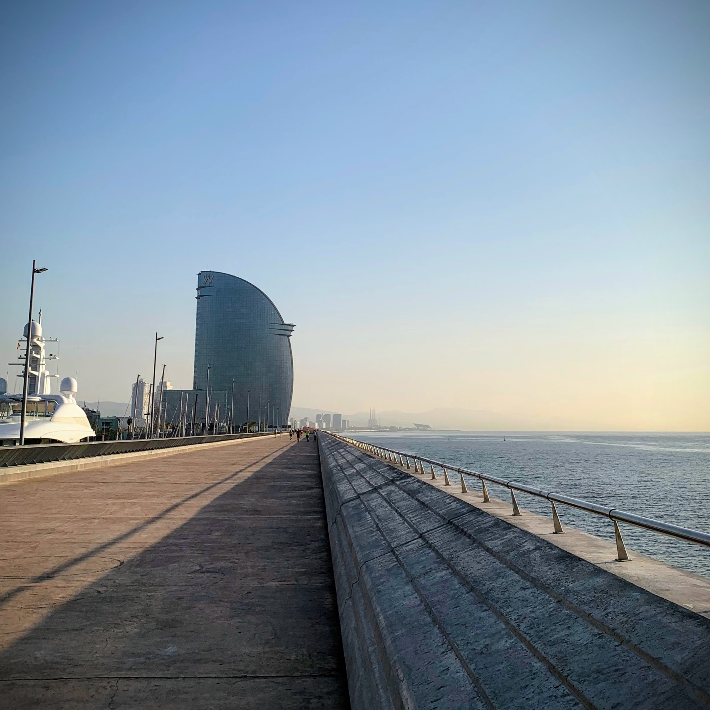
Z1 super easy, come sempre sforata in Z2.

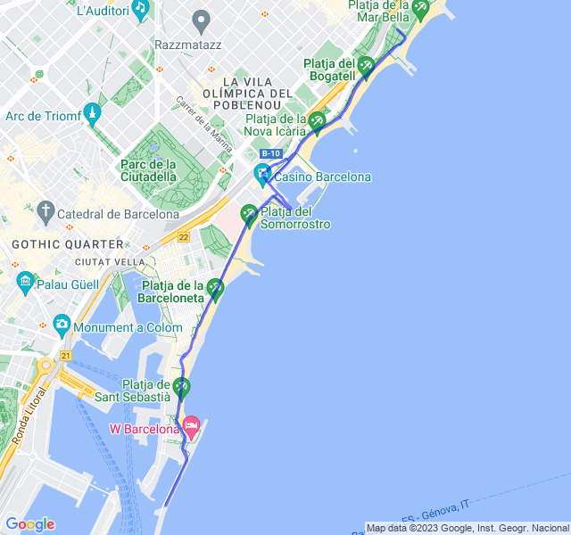
Quarta uscita
Lungo di 18km. Andato molto bene, sempre in controllo anche con la FC.
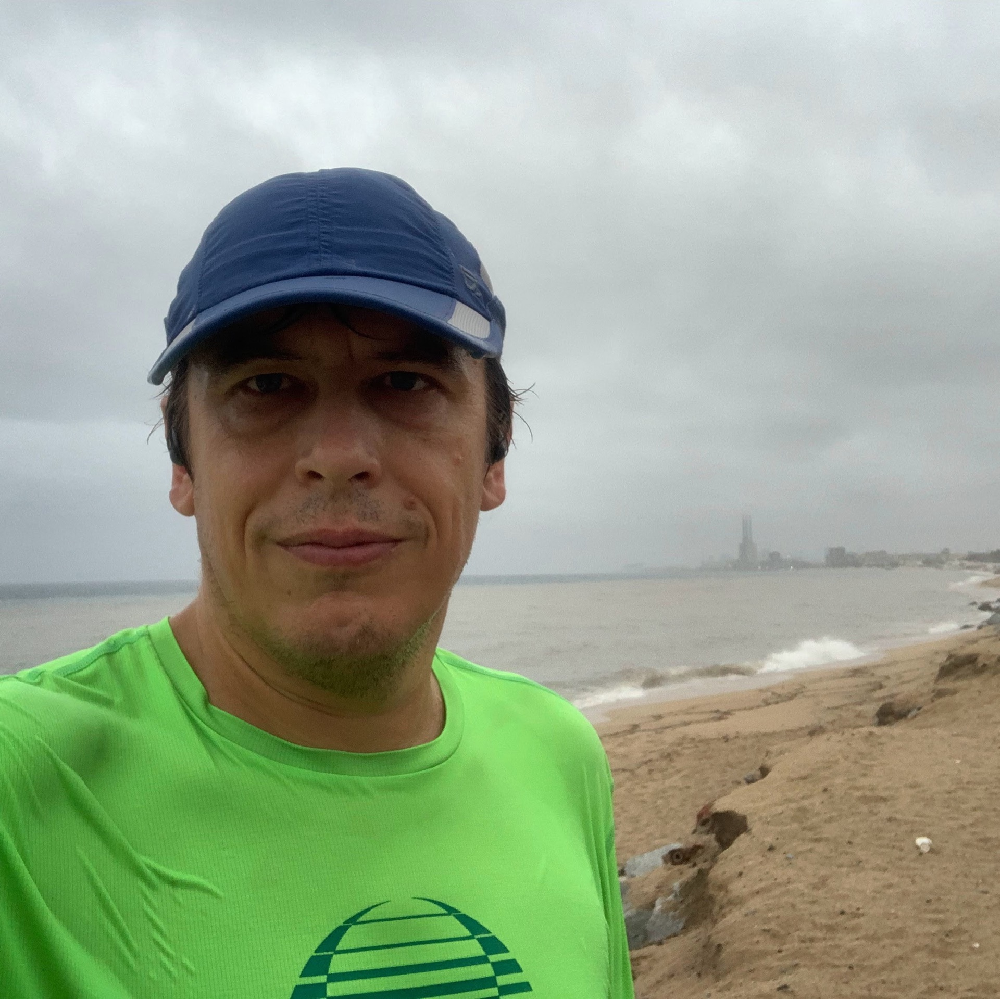
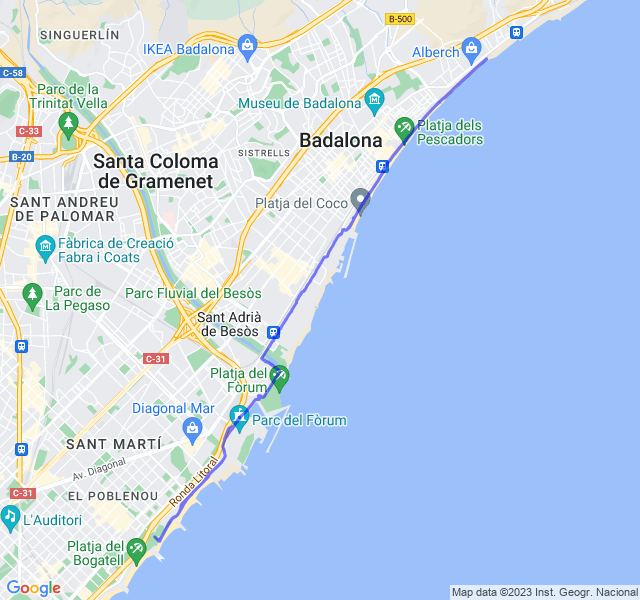